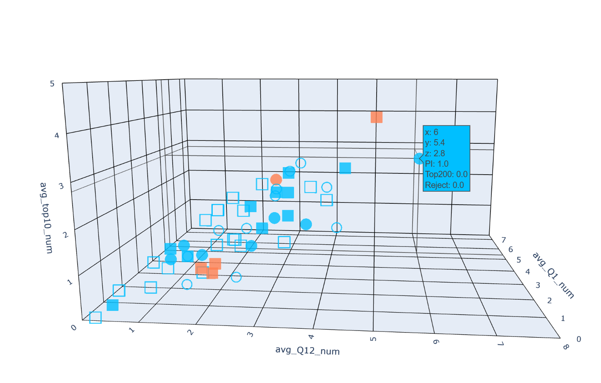

The X-axis represents different disciplines, each discipline corresponds to two stacked bar charts: the left is YTT program acceptors, the right is YTT program rejectors.
Cohort 1-4 represent the four different batches of the YTT program.
Visualization results Interpretation
1. The total number of acceptors and rejectors in "Engineering and Materials Science" is the highest, so the most invitations were issued in this field.
2. The second and fourth batches of the YTT program issued relatively more invitations, while the first and third batches issued fewer.
3. In all 6 disciplines and 4 batches, the number of YTT acceptors is greater than the number of rejectors. In the fourth batch of Chemistry and Environmental & Earth Sciences, there were no cases of rejection.
Before Return vs After Return
Element Interpretation
The x, y, z axes represent the average number of papers published per year by each researcher in different ranking intervals in their field up to the year of YTT invitation.
avg_Q12_num: Journals ranked in the top 50%
avg_Q1_num: Journals ranked in the top 25%
avg_top10_num: Journals ranked in the top 10
Square □,■ means the researcher obtained their PhD from a top 200 global university; Circle ○,● means from a non-top 200 university.
Hollow □,○ means the researcher had not obtained an overseas PI position at the time of YTT invitation; Solid ■,● means they had.
Red represents YTT rejectors, blue represents YTT acceptors.
Visualization Interpretation
In all fields, most YTT acceptors (50% or more) had not obtained an overseas PI position, but most of YTT rejectors had.
In all fields, most researchers, whether rejectors or acceptors, obtained their PhD from a top 200 overseas university.
Researchers with more publications in high-ranking journals mostly chose to accept the YTT program.
Click the following abbriviates to see the visualization results of each field. CHE.ENG.& M.SCIENV. & E.SCIINFO.SCILIFE.SCIPHY. & MATH

Researchers' Average Publications in Each Journal Category: Before vs After Return
Element Interpretation
before: Average number of papers published per year by each researcher before returning
after: Average number of papers published per year by each researcher after returning
before FA: Average number of first-author papers per year before returning
after FA: Average number of first-author papers per year after returning
before LA: Average number of corresponding-author papers per year before returning
after LA: Average number of corresponding-author papers per year after returning
num_of_pub: Total number of publications
Q12_num: Number of publications in journals ranked in the top 50%
Q1_num: Number of publications in journals ranked in the top 25%
Top10_num: Number of publications in journals ranked in the top 10
Visualization Interpretation
The average number of publications and first-author publications in all journal categories decreased significantly after returning, but the number of corresponding-author publications increased. Before returning, researchers published more as first authors than as corresponding authors; after returning, they published more as corresponding authors than as first authors. Also, before returning, no researcher published as a corresponding author in journals ranked in the top 25%. This indicates that after returning, researchers mainly shift from being the main executor of projects to the overall leader.
Among the applicants in the first four batches of the YTT program, a total of 721 met the requirements. Most of the talents who obtained their PhD degrees were concentrated in the United States (577 people), followed by Hong Kong (41 people), and then Canada (27 people).
The number of people who obtained their PhD in the United States accounts for more than 80% of the total. This indicates that the United States has significant appeal and strength in higher education and doctoral training. The U.S. offers better educational resources, research opportunities, and funding, making it the preferred destination for academic talent from China.
Click specific country to see more info，for example: the ratio of acceptors to rejectors，gender ratio，subject etc。In the number of applicatns top3 countries:
The ratio of acceptors to rejectors in the United States is 231:346, with the most in Life Sciences (141 persons).
The ratio of acceptors to rejectors in Hong Kong is 15:26, with the most in Life Sciences (12 persons).
The ratio of acceptors to rejectors in Canada is 16:11, with the most in Environmental and Earth Sciences (9 persons).
We found that only the United States and Hong Kong had more rejectors than acceptors. This may be related to the level of economic development, career opportunities, quality of life, or other personal factors in these regions. The ratio in Canada is close, and data from Germany, Sweden, France, Japan, and New Zealand show that all surveyed overseas talents accepted returning to China. This reflects the positive attitude of students from these countries towards returning to China for development.